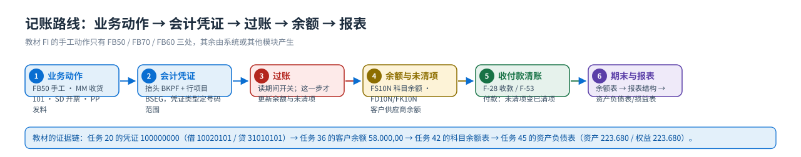

概念与定位
FI 是什么：四大职能、凭证从哪来、与邻居模块的分界
先回答三个问题：FI 到底管什么？账是从哪来的？它的边界在哪里。
一句话定义
FI = Financial Accounting（财务会计）
管「企业的账」：把已经发生的业务动作变成会计凭证，记到总账科目与客户/供应商明细上，最后产出资产负债表与损益表。
它和 CO（管理会计）的分工是：FI 对外（法定报表、税务、债权债务），CO 对内（成本、费用归属、内部考核）；两者共用一套总账科目，CO 的分配/分摊/结算会实时过账回 FI。
教学提醒：FI 的凭证绝大多数不是会计人员手工录的 —— 教材里手工录的只有 FB50（实收资本 2.800,00）、FB70（客户发票 58.000）、FB60（供应商发票）这几笔，其余都来自其他模块或系统自动结转。

四大职能
| 职能 | 管什么 | 典型前台事务 | 产出 |
|---|---|---|---|
| 总账 GL General Ledger | 会计科目表与总账科目主数据、手工凭证、科目余额、期间开关、留存收益结转、财务报表版本 | FS00 建/改科目 · FB50 录凭证 · FS10N 看余额 · FB03 查凭证 | 总账科目余额、科目余额表、资产负债表/损益表 |
| 应收账款 AR Accounts Receivable | 客户主数据、客户发票、收款与清账、客户余额与账龄（催款） | FD01 建客户 · FB70 发票 · F-28 收款 · FD10N 客户余额 | 客户未清项/已清项、客户余额报表 |
| 应付账款 AP Accounts Payable | 供应商主数据、供应商发票、付款与清账、供应商余额 | FK01 建供应商 · FB60 发票 · F-53 付款 · FK10N 供应商余额 | 供应商未清项/已清项、付款凭证 |
| 报表与期末 Reporting & Closing | 凭证号码范围、记账期间变式与开账关账、容差组、报表结构（财务报表版本） | S_ALR_87003642 未清/已结过账期间 · S_ALR_87012276 科目余额 · 资产负债表/损益表 | 对外财务报表、期末结转 |
| 资产会计 AA Asset Accounting | 固定资产主数据、折旧、资产报表（教材未演示，标准模块） | （教材未演示；常见事务码 AS01/AB01） | 资产明细账与折旧凭证 |
凭证与对象清单（谁产生、T-code、影响什么）
| 对象/凭证 | 谁产生 | 教材里的 T-code | 它影响什么 |
|---|---|---|---|
| 总账科目主数据 | 会计人员（后台准备 + 前台 FS00） | FS00 | 决定这个科目能不能手工记、字段必输项、是否统驭科目 |
| 客户主数据 | 会计人员（教材任务 29/30） | FD01 | 客户明细账、统驭科目 11310101、付款条件与清账方式 |
| 供应商主数据 | 会计人员（教材任务 31） | FK01 | 供应商明细账、统驭科目 21210101 |
| 会计凭证 | 手工（FB50/FB70/FB60）或系统自动（MM/SD/CO） | FB50 · FB03 | 更新科目余额与未清项；凭证号来自号码范围（教材任务 15 复制到 C999） |
| 客户/供应商行项目 | 系统（过账时自动拆分到明细） | FD10N · FK10N | 未清项 → 通过收款/付款「清账」变成已清项 |
| 科目余额表 | 系统（读取汇总表） | S_ALR_87012276（任务 42） | 期末对账与报表的取数基础 |
| 财务报表版本 | 会计人员配置（任务 44） | IMG 路径（见配置篇） | 把科目范围映射成报表项目，决定资产负债表/损益表长什么样 |
借、贷与凭证类型（读凭证的三把钥匙）
| 概念 | 教学说法 | 教材里的证据 |
|---|---|---|
| 借方/贷方 | 资产与费用增加记借方，负债、权益与收入增加记贷方；SAP 里同一张凭证借贷合计必须相等（余额划不平就存不了盘） | 任务 20：借 10020101 银行存款 / 贷 31010101 实收资本，两行都是 2.800,00 |
| 凭证类型 | 决定凭证的号码范围、字段状态与允许的业务（SA 总账 / DR 客户发票 / DZ 客户收款 / KR 供应商发票 / KZ 供应商付款） | 任务 39 的付款凭证画面显示凭证类型 KZ；其余类型教材未逐屏演示，按标准类型 |
| 记账码 | 行项目里的两位代码（如 40 借方总账、50 贷方总账、001/002 客户、25 供应商），决定字段状态与过账键 | 任务 20 画面：40 = 借 10020101、50 = 贷 31010101；任务 39 画面：50 = 贷 0010020111、25 = 借供应商 |
| 科目号的前导零 | SAP 内部按 10 位存科目号，前导零只是显示格式：0010020111 就是科目 10020101 | 任务 39 付款画面显示 0010020111（银行存款-中行），教学时按 8 位科目号读 |
| 过账期间 | 凭证的「过账日期」落在哪个期间就更新哪个期间；期间关了就记不进去 | 任务 18 前台看「未清过帐期间和已结过帐期间」，P999 变式 + 期间 1–12 与 13–16 特殊期间 |
教材里的两个「数字坑」（讲课务必点出来）① 任务 20 正文写「收到 2 800 000 的实收资本」，而 FB03 画面显示
2.800,00 —— SAP 用点做千位分隔、逗号做小数点，所以画面数值是 2 800.00 元，教学以画面为准；② 任务 21 的正文把「显示总账科目余额 FS10N」和「定义税务科目（销项税 MWS → 21710102）」混在同一个任务里，其实是两件事，讲课时要拆开。记账的路线图
{kind=link}

与邻居模块的分界

| 情况 | 该找谁 |
|---|---|
| 物料收进来了，想看它记到哪个存货科目 | MM 的 OBYC 配置（BSX），FI 只负责科目主数据 |
| 客户欠款、账龄、催款单 | FI 的 AR（FD10N / FBL5N / 客户余额报表） |
| 要改销售价格、交货期、开票 | SD；FI 只管开票后的应收与收入科目 |
| 费用要分到成本中心、看计划实际差异 | CO（FI 的凭证是它的数据来源） |
| 银行对账、现金头寸 | FI 的银行/现金科目（教材用 10010101 现金、10020101 银行存款） |
| 固定资产折旧、资产报表 | FI-AA（教材未演示） |
| 要开放/关闭一个会计期间 | FI 的记账期间变式与前台期间设置（任务 16–18） |
12 个常见误解
| # | 常见说法 | 实际上 |
|---|---|---|
| 1 | 「收货、开票了就自动有会计凭证」 | 只有在科目确定（MM 的 OBYC、SD 的收入科目）配好、总账科目主数据也存在时才会自动生成；采购订单本身不动账。 |
| 2 | 「会计凭证是 FI 产生的」 | 绝大多数凭证是别处产生的：MM 收货/发票校验、SD 开票、PP 领料收货、CO 结算。FI 手工录的只有总账凭证与客户/供应商发票（FB50/FB70/FB60）。 |
| 3 | 「总账科目建个号就行」 | 总账科目分科目表层（表 SKA1，跨公司代码）与公司代码层（表 SKB1）：字段状态组、统驭科目、只能自动记帐都在公司代码层，不维护就等于没配。 |
| 4 | 「科目组和字段状态组是一回事」 | 不是：科目组控制科目本身（哪些字段可输、编号范围），字段状态组控制凭证里的辅助核算项是否必输/可选/隐藏。教材任务 07 原文特别强调这一点。 |
| 5 | 「统驭科目随便改」 | 客户/供应商的明细只有在统驭科目上才汇总进总账（11310101 应收 / 21210101 应付）；有数据后再改会连带历史余额，必须先咨询顾问。 |
| 6 | 「10020101 和 0010020111 是两个科目」 | 是同一个：SAP 按 10 位存科目号，前导零只是显示。教材任务 39 的付款画面就显示 0010020111。 |
| 7 | 「凭证保存了就是过账了」 | FB50 可以只预制（暂存草稿），也可以直接保存过账；只有过账才更新余额（教材任务 20 画面自己写明了这一点）。 |
| 8 | 「录错了删掉重来」 | 已过账凭证不能删除，只能冲销（FB08）或反向记账；这也是内部控制的底线。 |
| 9 | 「什么时候都能记账」 | 记账期间变式（教材 P999）控制开关，关掉的期间不允许再过账；任务 18 就是前台看/改这个开关。 |
| 10 | 「有科目余额就是有利润」 | 利润要靠财务报表版本（任务 44）把损益科目范围汇总成报表项目，「P&L 结果 / 净值结果：利润·亏损」是系统预定义项目，自动算资产负债表的轧差。 |
| 11 | 「容差组是 MM 的事」 | FI 自己也有两套：雇员容差组（任务 19，限制单张凭证/单笔未清项金额）与应收应付容差组（任务 22，控制收付款差异）。 |
| 12 | 「报表数字不对也看不出来」 | 资产负债表不平（资产 ≠ 负债 + 所有者权益）通常就是留存收益科目（任务 09）或报表项目科目范围（任务 44）没配好 —— 先查这两处，再查未过账的预制凭证。 |
教材画面（建立整体印象）